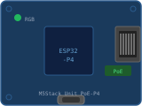

Flash your M5Stack Unit PoE-P4 directly from the browser — no drivers or tools required.
Device

M5Stack Unit PoE-P4ESP32-P4 · Fast Ethernet (10/100) · PoE
Connect & install
⚠️ WebSerial is not supported in this browser.
Use Chrome or Edge (desktop).
Instructions
Plug the device into this computer via USB-C.
Hold the BOOT button, click Connect & Flash,
select the serial port, then release BOOT.
Wait for the flash to complete (~30–60 s).
Unplug USB-C. Connect an Ethernet cable (with PoE if available,
otherwise use the USB-C for power).
Browse to http://noports-poe.local (or the IP printed on the
serial console) to complete the setup wizard.
Troubleshooting
"Failed to initialize" — hold the BOOT button before
clicking Connect & Flash, then release after selecting the port.
Device stuck in a boot loop — use the Erase device option
inside the flash dialog, then re-flash using the BOOT-button method.
No serial port appears — try a different USB-C cable (some are
charge-only), or close any other app using the port (Arduino IDE,
PlatformIO monitor).
http://noports-poe.local not found — check that the Ethernet
cable is connected and the link LEDs are lit. The IP address is also
printed on the serial console at boot.